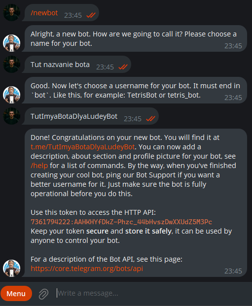
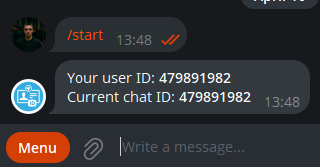

Создание Telegram-бота
1. Получите токен от @BotFather
Перейдите в
@BotFather
Напишите
/newbot
, придумайте имя и username
Скопируйте API-токен

2. Узнайте ваш Telegram ID
Напишите в
@userinfobot

3. Введите данные
Bot Token:
Ваш Telegram ID:
Создать бота